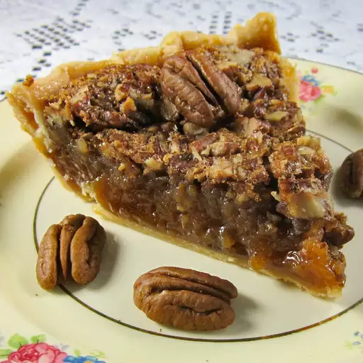

Kentucky Pecan Pie

Recipe credits to All Recipes
Home
Ingredients
- 1 cup white corn syrup
- 1 cup packed brown sugar
- ⅓ teaspoon salt
- ⅓ cup unsalted butter, melted
- 3 large eggs, slightly beaten
- 1 cup chopped pecans
- (9 inch) unbaked pie crust
Directions
- Preheat the oven to 350 degrees F (175 degrees C).
- Mix together corn syrup, sugar, melted butter, and salt in a large bowl. Add eggs and beat until well combined. Pour mixture into the pie crust and sprinkle pecans over top.
- Bake in the preheated oven for 50 to 60 minutes.
- Remove from the oven and let cool to room temperature before serving.
Home